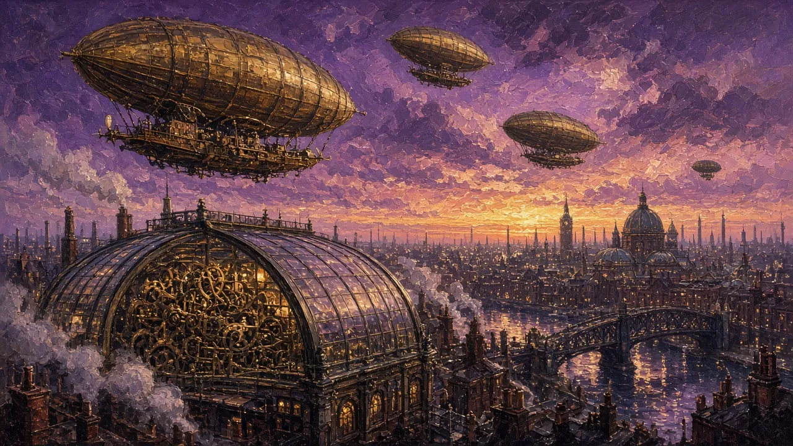
The Novel, the Nightmare & the Ethics of ‘What If?’ · C1/C2 · Speaking, Analysis & Discussion
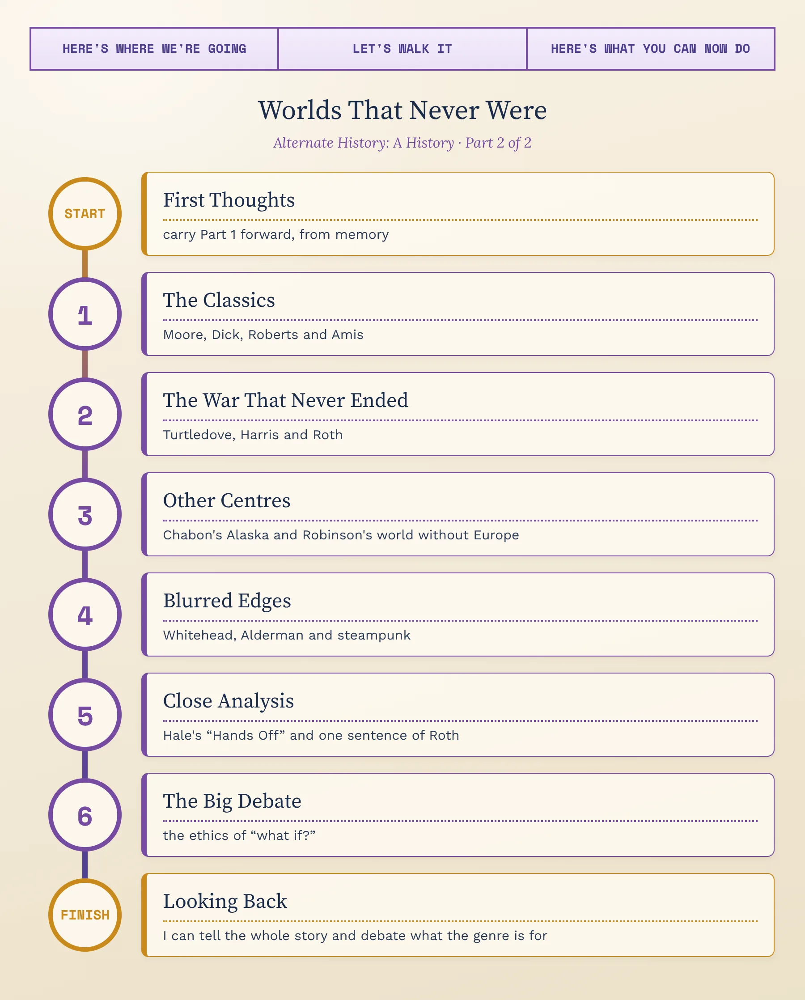
By 1940 alternate history had its essays and its pulp adventures. The next eighty years would turn it into a literature. In the 1950s and 1960s, American and British writers wrote the first great alternate-history novels — a defeated United States, an America shared between Hitler and Japan, an England that never left the Catholic Church. From the 1990s, the Second World War and the American Civil War became the genre's obsession, and best-selling thrillers and literary novels imagined fascism winning. And in this century, writers have asked a new question: whose history is being rewritten, and for whom? This lesson follows that journey, then looks closely at a nineteenth-century story that warned against meddling with history at all.
1. Retell, briefly: what did Livy ask in Book 9, and what did Geoffroy imagine in 1836?
2. Define point of divergence and contingency in your own words, with one example each.
3. The “argued / told” contrast in one sentence — and what did Carr and Ferguson each think of the “what if?” game?
4. What happens in “Sidewise in Time” or Lest Darkness Fall — and which of the four techniques (hinge, ripple, mirror, double vision) does it use best?
Between 1952 and 1976, four writers turned “what if?” from a clever idea into the subject of serious novels, with characters who live whole lives inside the changed world. Their books are still the ones most often recommended as the best of the genre.
The Second World War made “what if?” feel terribly close. For a generation of readers, a world in which the other side had won was not a game but something they had feared for real. At the same time, the post-war boom in science-fiction magazines and paperbacks gave writers a home for long, ambitious stories about other worlds.
The new novels also changed the scale of the genre. The essays of Part 1 surveyed whole centuries from above; the novels put the reader on the ground, with an ordinary person living an ordinary day in the changed world. That is the difference between being told a counterfactual and living inside one.
Who he was: Ward Moore (1903–1978), an American novelist who worked for years in bookshops — like his hero.
What happens: the South won the Battle of Gettysburg in 1863 and the war a year later. In the twentieth century, the Confederacy is a rich world power and the remaining United States is a poor, backward country. Hodge Backmaker, a young man who wants to be a historian, joins a community of scholars where a scientist has built a time machine. In 1952 he travels back to watch the battle — and by accident causes the death of the Confederate officer whose men would have held the hill called Little Round Top. The North wins. Hodge is stranded in our history, which his own actions have created, and writes his story down.
Its history: a shorter version appeared in The Magazine of Fantasy and Science Fiction in November 1952; the novel followed in 1953.
Why it matters: it was one of the first full alternate-history novels in English, and its ending is a perfect time-travel intervention — the historian who changes the history he came only to watch.
Who he was: one of the most influential American science-fiction writers, whom you may have met in our Science Fiction: A History, Part 2 (in “The New Wave” tab).
What happens: the Axis powers won the Second World War. Fifteen years later, America is divided between Nazi Germany in the east and Imperial Japan on the Pacific coast, with a neutral zone in the Rocky Mountains. Several characters — an antiques dealer who sells fake “historic” Americana, a Japanese official, a Jewish metalworker in hiding, a judo teacher — make their decisions by consulting the ancient Chinese I Ching. Many of them are reading a banned novel, The Grasshopper Lies Heavy, by a writer called Hawthorne Abendsen, which imagines that the Allies won.
Why it matters: it won the Hugo Award for Best Novel in 1963 and became the most famous alternate history ever written, adapted by Amazon as a television series (2015–19). Its book within the book — like Churchill's essay in Part 1 — turns our own history into a rumour, and asks what “real” history is anyway.
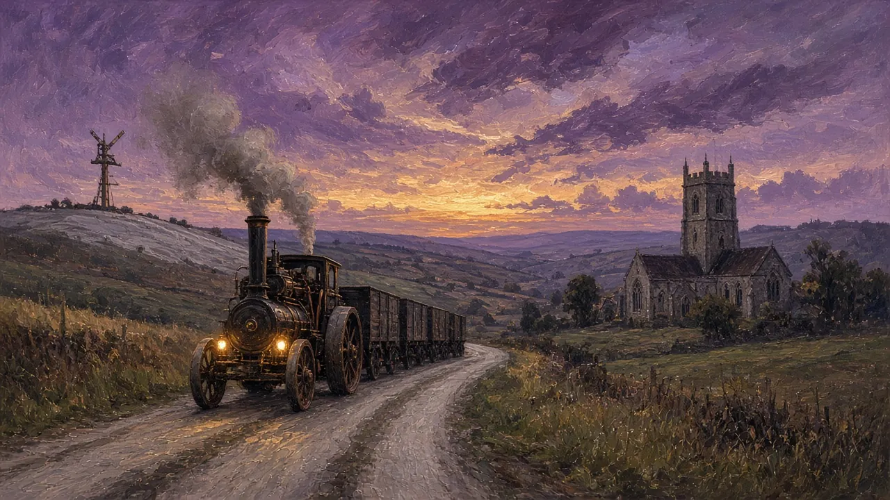
Who he was: Keith Roberts (1935–2000), an English writer and illustrator.
What happens: in 1588 Queen Elizabeth I is assassinated; the Spanish Armada succeeds, and England stays Catholic. Four centuries later, in 1968, the Church still holds back modern science: great steam traction engines haul goods along the roads of Dorset, and messages cross the country through the towers of the Guild of Signallers, who send them by semaphore. The book is a series of linked stories — it calls them “measures”, like the movements of a slow, stately dance, the pavane.
Why it matters: it is the great English alternate history — quiet, rural and melancholy rather than full of battles — and its traction engines and semaphore towers anticipated steampunk by twenty years. (Roberts's work is still in copyright, so we describe it rather than quote it.)
Who he was: Kingsley Amis (1922–1995), one of the best-known English novelists of his generation, the author of the comic novel Lucky Jim (1954) and a lifelong reader of science fiction.
What happens: the Reformation never happened — Martin Luther, instead of breaking with Rome, became Pope himself — and in 1976 the Catholic Church still rules Europe. Hubert Anvil, a ten-year-old choirboy with a beautiful voice, is chosen by the Church to be castrated, so that his voice will never break. The novel follows his attempt to escape the “alteration”.
Why it matters: it won the John W. Campbell Memorial Award for best science-fiction novel in 1977, and uses alternate history for satire — a world that has kept its beauty by sacrificing its children.
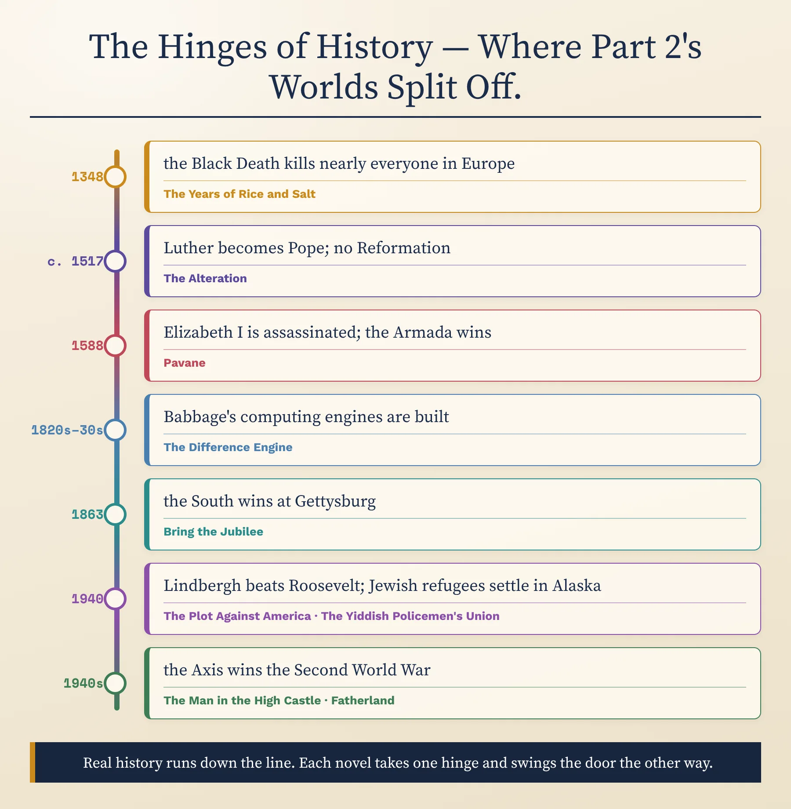
Each novel in this lesson splits off from real history at a different point. Pick two from the chart and compare them: which hinge is more believable — a close battle, an assassination, a plague, an election? And which writer follows the consequences more honestly?
Look at the alternate histories in any bookshop and two wars dominate: the American Civil War and, above all, the Second World War. From the 1990s, a historian with a gift for epic series, a British journalist and one of America's greatest novelists all imagined that the wrong side had won — or nearly had. Why do readers keep returning to these nightmares?
Both wars are remembered as moral struggles: freedom against slavery, democracy against fascism. Imagining the other side winning raises the highest possible stakes. Both also had moments that really could have gone either way — Gettysburg in 1863, the Battle of Britain in 1940 — which gives writers believable hinges.
And both are still close to the present: their consequences, from American race relations to the map of Europe, are all around us. A “what if?” about them is always also a question about today.
After 1865, many white Southerners told the story of the Civil War as a noble “Lost Cause”: a war fought for honour and states' rights rather than for slavery, led by heroic generals such as Robert E. Lee. Historians have spent decades taking that myth apart.
This is why Confederate-victory stories are so sensitive. A writer who makes Lee kinder, or slavery gentler, than the evidence shows is not just imagining another past — they may be repeating an old piece of propaganda about the real one. Ask of every Civil War alternate history: does it challenge the myth, or quietly retell it?
Who he is: an American writer with a doctorate in Byzantine history, often called “the master of alternate history”, who has written dozens of alternate-history novels, many in long series.
The Guns of the South (1992): time travellers from a South African white-supremacist group arrive in 1864 and give General Robert E. Lee's army thousands of modern AK-47 rifles. The South wins its independence. But in the novel Lee, now President, turns against the time travellers' racism and moves towards ending slavery — a plot choice that historians have criticised for flattering the real Lee. In the Worldwar series (from 1994), alien invaders land in the middle of the Second World War.
Why he matters: he made alternate history a best-selling popular genre, and his books regularly win the Sidewise Award — named, you remember, after Leinster's story.
Who he is: an English journalist turned novelist (b. 1957), known for historical thrillers.
What happens: Germany won the war. It is April 1964, a week before Adolf Hitler's seventy-fifth birthday, and the American President, Joseph Kennedy — the father, not the son — is about to visit Berlin. Xavier March, a detective in the criminal police, investigates the body of a senior Nazi official found in a lake. With an American journalist, Charlotte Maguire, he discovers that someone is killing the men who knew the secret the victorious regime has hidden from the world: the murder of Europe's Jews.
Why it matters: it took alternate history out of the science-fiction section and into the airport best-seller list — and it uses a nightmare history to make a point about real history: the Holocaust was discovered because Germany lost.
Who he was: Philip Roth (1933–2018), one of the most celebrated American novelists of the twentieth century, from a Jewish family in Newark, New Jersey.
What happens: in 1940 the aviator Charles Lindbergh — a national hero, an opponent of America joining the war, and, in real life, the maker of an antisemitic speech in 1941 — defeats Franklin D. Roosevelt in the presidential election. The story is told by a boy called Philip Roth, growing up in Newark, as his Jewish family watches their country turn against them.
Why it matters: a major literary novelist chose alternate history to write about how quickly a democracy can change. It was adapted for television by HBO in 2020. We read its first sentence in the Close Analysis tab.
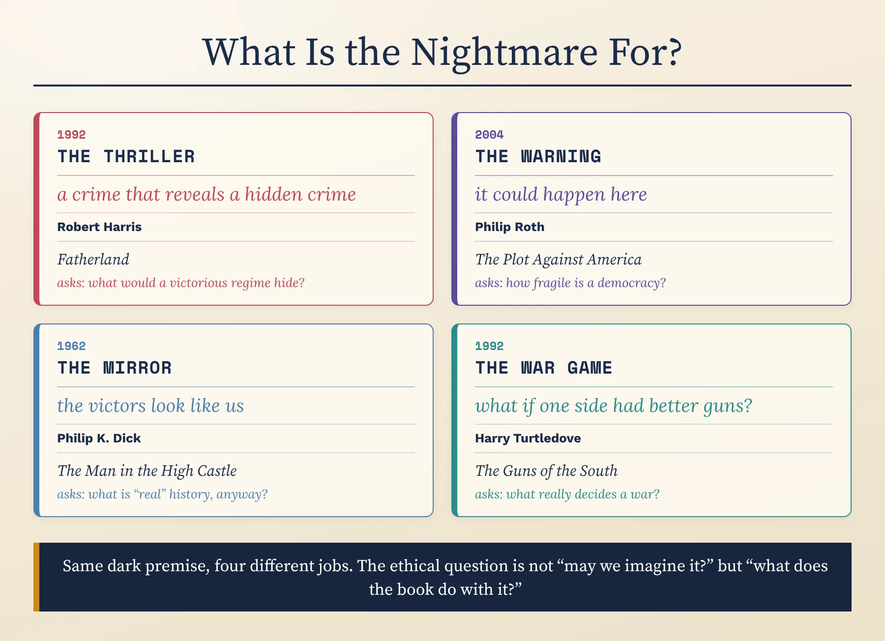
What is the point of divergence in Fatherland and in The Plot Against America? And what does each book use its nightmare for?
Choose a real election, battle, invention or death from the last hundred years that could really have gone the other way. Write down the hinge, then three consequences — first, second and third. Then say it aloud: is your world a nightmare history, a better world, or just a strange one?
Most classic alternate history keeps Europe and the United States at the centre: the battles, the empires, the winners. In this century, two American novelists moved the centre — one to a Jewish homeland on the edge of Alaska, the other to a world in which Europe almost disappears.
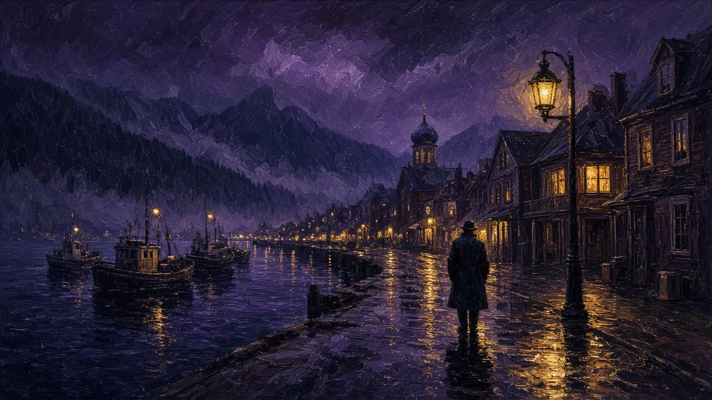
Who he is: an American novelist (b. 1963) who won the Pulitzer Prize in 2001 for The Amazing Adventures of Kavalier & Clay.
The real history behind it: in 1939–40, a report from the US Department of the Interior, known as the Slattery Report, proposed settling Jewish refugees from Europe in Alaska. Congress never approved it.
What happens: in the novel, the plan went ahead. Jewish refugees built a Yiddish-speaking city at Sitka, on the Alaskan coast, while the new state of Israel was destroyed in 1948. Sixty years later, the temporary district is about to “revert” to Alaska, and its people do not know where they will go. Meyer Landsman, a tired, heavy-drinking detective, investigates the murder of a chess prodigy in the cheap hotel where he lives.
Why it matters: it won the Hugo, Nebula, Locus and Sidewise awards — rare recognition from both science-fiction and literary readers. It shows that alternate history can be a detective story, a love story and a meditation on exile and belonging all at once.
Who he is: an American science-fiction writer (b. 1952), best known for his Mars trilogy.
What happens: in the fourteenth century, the Black Death kills not a third of Europe's population but almost all of it. Over the next seven hundred years, history is made by China, the Islamic world, India and the peoples of the Americas. The novel is told in ten parts across the centuries, following a small group of souls who are reborn again and again and meet between lives in the bardo, the waiting place of Tibetan Buddhism.
Why it matters: it won the Locus Award in 2003. By removing Europe almost entirely, it challenges the assumption — built into much of the genre — that the West is the natural centre of history.
Chabon gives history to a people who, in reality, nearly had none of their own; Robinson takes it away from Europe altogether. Is this a real change in what alternate history can do — or the same game with different pieces? Argue it aloud, then compare your view with a critic's.
Where does alternate history end? Some of the most admired novels of recent years borrow its methods without fitting its definition — and one whole style, steampunk, grew out of it and became a fashion of its own.
Historical fiction invents characters but keeps the record of events: the war is won by the side that really won it. Alternate history changes the record itself: the battle goes the other way. In between sits secret history, which keeps every known fact but reveals a hidden cause behind them — a conspiracy, a secret society, a touch of magic — so that the world we know turns out to have been shaped by something no history book mentions.
Many modern novels move between all three. The test is simple to state and hard to apply: if the story were true, would the history books have to be rewritten — or only footnoted?
Who they are: two of the founders of cyberpunk — Gibson (b. 1948) wrote Neuromancer (1984).
What happens: in the 1820s and 1830s, Charles Babbage succeeds in building his mechanical computing engines, and Britain enters the computer age a century early. In 1855, London is a city of steam-driven data processing, ruled by the Industrial Radical Party, with Lord Byron as Prime Minister and his daughter Ada as the “Queen of Engines”. The plot follows a mysterious box of punched cards.
Why it matters: it is the novel most often credited with making steampunk famous. (The word itself was invented as a joke by the American writer K. W. Jeter, in a letter to the magazine Locus in 1987.)
Steampunk quickly escaped from books into films, comics, games, fashion and design: brass goggles, top hats, corsets, clockwork and airships, worn at conventions and built into everything from lamps to computer cases. Most of it has no alternate history behind it at all — it is simply a style.
Critics have asked what that style is nostalgic for. The Victorian age it borrows from was also the age of child labour, factory pollution and empire. The best steampunk, like The Difference Engine, uses its changed history to look at those costs; the weakest keeps the brass and forgets the people who paid for it.
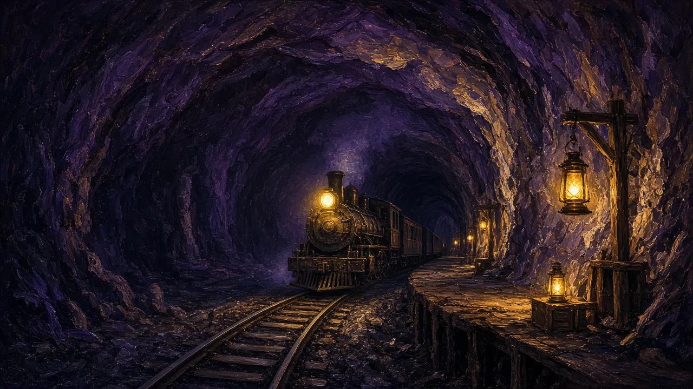
Who he is: an American novelist (b. 1969), one of the few writers to win the Pulitzer Prize for Fiction twice.
What happens: Cora, an enslaved young woman, escapes from a cotton plantation in Georgia. In history, the “Underground Railroad” was a secret network of people and safe houses that helped enslaved people escape to the North. In Whitehead's novel it is a real railway, with tunnels, stations and trains under the earth. Each state Cora reaches shows a different face of American racism.
Is it alternate history? It won the National Book Award (2016) and the Pulitzer Prize (2017) — and also the Arthur C. Clarke Award for science fiction (2017). Its central change is a metaphor made literal, not a single point of divergence: some critics call it alternate history, others call it fable or magical realism. It was adapted for television by Barry Jenkins in 2021.
Who she is: an English novelist (b. 1974) and video-game writer.
What happens: in our own time, teenage girls around the world discover they can release powerful electric shocks from their bodies. Within a few years, the balance of power between men and women is reversed — violently. The novel is framed as a historical work written about five thousand years later, by a male author sending his manuscript to a woman novelist called Naomi.
Is it alternate history? Debatable — and worth debating. It won the Baileys Women's Prize for Fiction in 2017. But its change happens in the present, not the past, and its frame looks back from the far future — so many readers class it as speculative fiction or a dystopia rather than alternate history. It uses the genre's double vision, though: its future historians find our real world, where men hold the power, hard to believe.
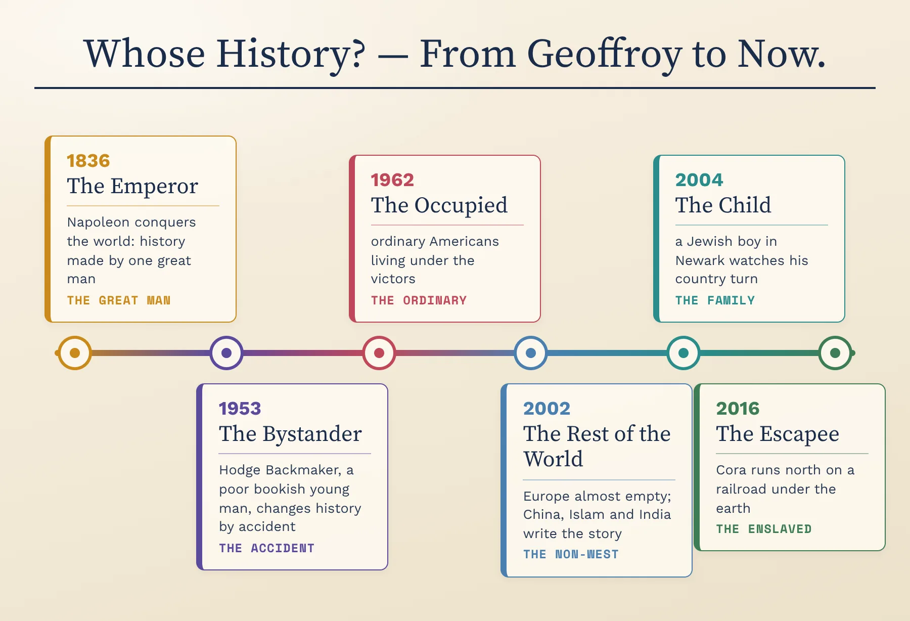
Follow the line on the chart: the centre of the story moves from an emperor to an accident, to ordinary people, to the non-Western world, to a child, to an enslaved woman. Now decide: are The Underground Railroad and The Power alternate histories? Write your test for “alternate history” in one sentence, and apply it to both.
Advanced analysis is about how language creates meaning. Our main specimen is a story first published anonymously in Harper's New Monthly Magazine in March 1881 — Edward Everett Hale's “Hands Off”. A spirit, free of time, watches the young Joseph of the Bible escaping from the traders who are taking him to be sold as a slave in Egypt; one barking dog stands between the boy and freedom. The spirit is tempted to step in. In the story, he does — in a copy of our world that his Guardian gives him for the experiment — and without Joseph in Egypt, history collapses into centuries of horror until no one is left.
And, for comparison, the first sentence of Philip Roth's The Plot Against America (2004), the novel you met in “The War That Never Ended”:
Answer aloud first. Then compare.
Write the first sentence of your own alternate-history novel — told by someone who lived through the change. Like Roth, make it create a feeling before we know the facts. Read it aloud. Then argue: should alternate history be told by the powerful who made the change, or by the ordinary people who lived with it?
In 2017 the American TV channel HBO announced Confederate, a series set in a present-day America where the South had won the Civil War and slavery still existed, from the creators of Game of Thrones, David Benioff and D. B. Weiss, with the writers Malcolm Spellman and Nichelle Tramble Spellman. A social-media campaign, #NoConfederate, argued that the show risked turning slavery into entertainment; the series was never made, and HBO confirmed its cancellation in 2020. The historian Gavriel Rosenfeld, in The World Hitler Never Made (2005), has argued that Nazi-victory stories tell us a great deal about how the memory of Nazism changes over time — and that some later ones make it look less monstrous. Everything you need for these debates is now in your head. Pick two. Take a position, support it with the writers and terms you've learned, and concede one point to the other side.
1. Should there be limits on alternate history? Is a story in which the Confederacy or the Nazis won a powerful warning — or a risk of making their worlds look normal, even attractive?
2. Turtledove's Lee moves towards ending slavery; Hale's Canaanites are “brutes”. When an alternate history reshapes real people and peoples, does the writer owe anything to the historical record?
3. Who has the right to rewrite whose history? Can an American novelist imagine a Europe-free world, or a white writer imagine a world where slavery never ended, without it becoming someone else's pain used as decoration?
4. The Underground Railroad and The Power: alternate history, or not? Does the label matter — and who gains or loses from it?
Draft one sentence comparing Harris's Fatherland and Roth's The Plot Against America that could open a comparative essay. It must make an arguable claim — something a reasonable person could push back on — not just state a difference. Use a frame, then say yours aloud and defend it.
No notes for this — it pulls both lessons together.
1. What happens at the end of Bring the Jubilee — and why is it the perfect time-travel intervention?
2. What is The Grasshopper Lies Heavy, and what does it do in The Man in the High Castle?
3. Define the book within the book, nightmare history and steampunk, with an example each.
4. Name the point of divergence of Pavane, The Yiddish Policemen's Union and The Years of Rice and Salt.
5. Walk the “whose history?” line: six stops, six answers.
Now measure yourself against the two big maps — one for the whole timeline, one for the writers. Where you were wrong, say it again, right this time.
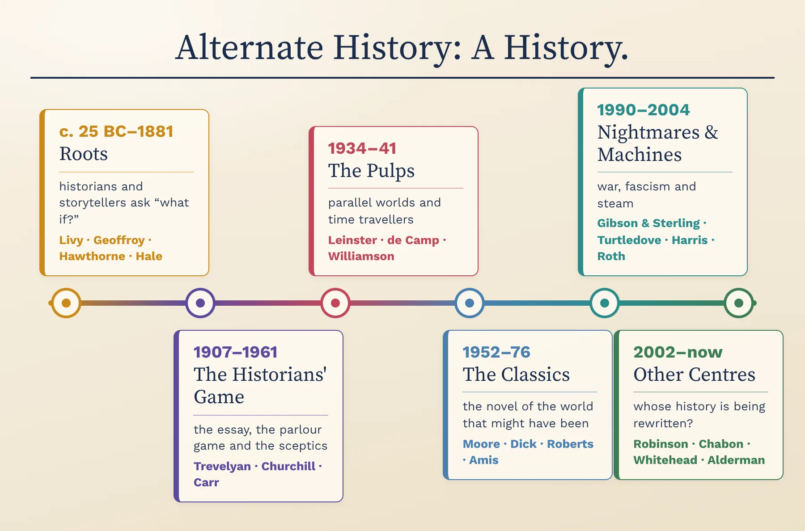
Find three works on the line you could not have placed before these two lessons. For one of them, say what came just before it and how it was a reply — the hinge it chose, the centre it moved, or the warning it gave.
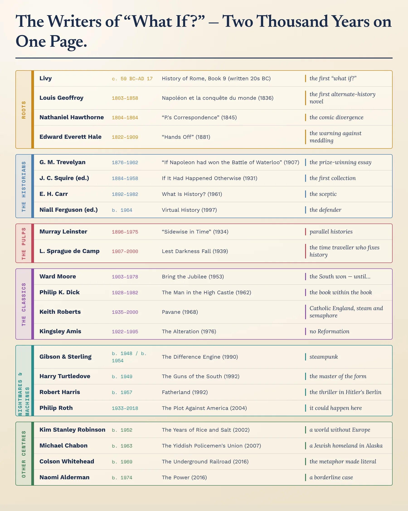
Pick three writers from three different centuries or decades. Put them in order and say, for each, the one thing they added that the writer before them had not — a new machine, a new kind of narrator, or a whole new centre for history.
Define alternate history in a single sentence that covers everything from Livy to The Years of Rice and Salt. Say it aloud — then stress-test it: does it wrongly include every historical novel with invented characters? Does it wrongly exclude “Sidewise in Time” or The Underground Railroad? Refine it until it survives.
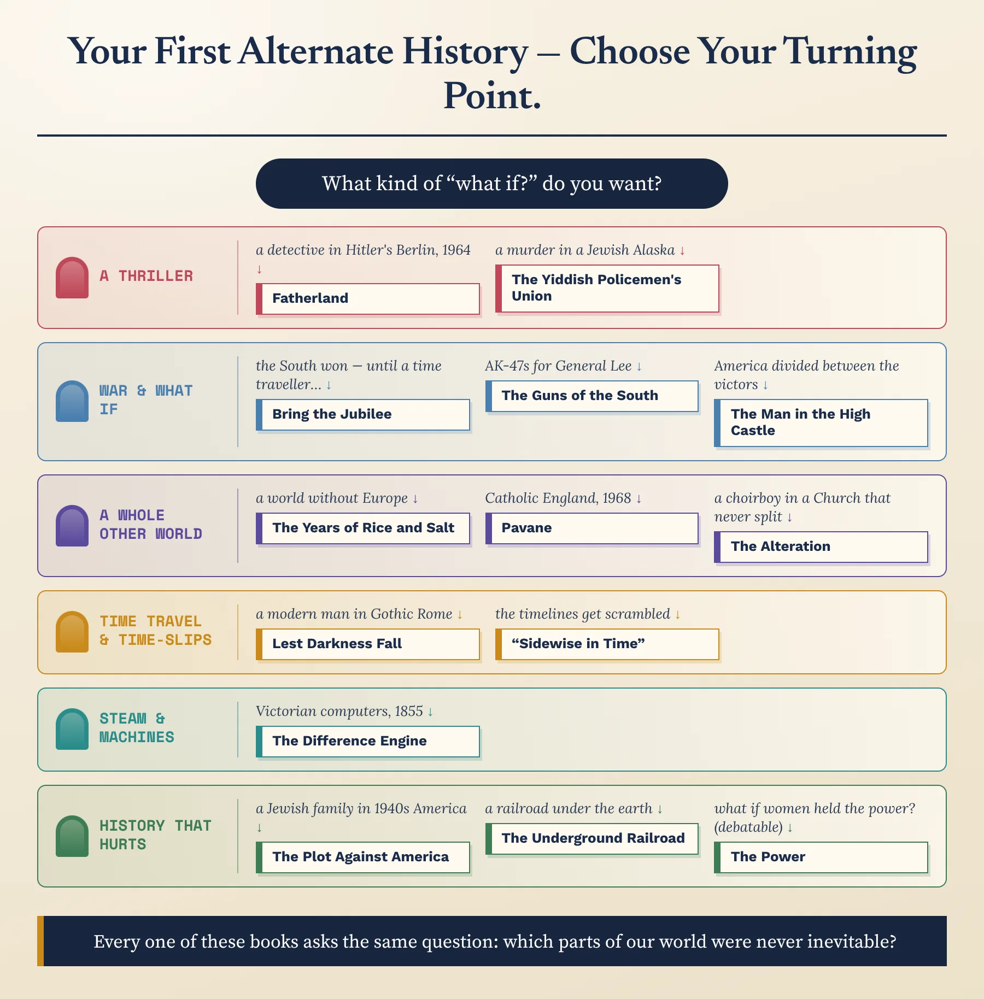
Follow the flowchart to the book it picks for you. Do you agree with where it sent you? Make the case for a different first book instead — in the language of the toolkit: its hinge, its ripple, its narrator, what it is really about.
Across both lessons: which writer or idea most changed how you see the genre — and which one book will you actually go and read? (Say why, in the language of the toolkit: point of divergence, contingency, the book within the book, time-travel intervention, nightmare history, steampunk.)